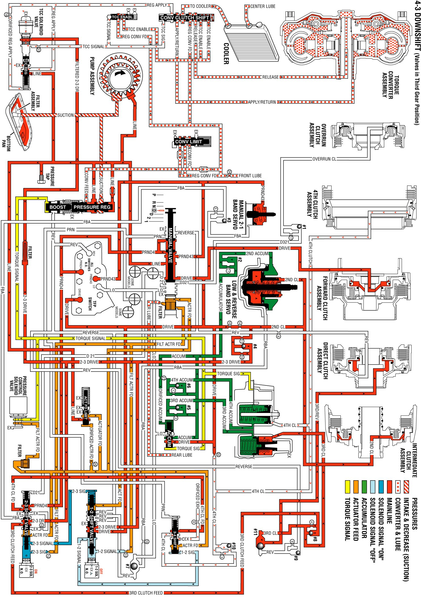

Overdrive Range, 4-3 Downshift
Overdrive Range, 4-3 Downshift
In order to obtain the 4-3 downshift, the PCM receives an input signal from the TP Sensor at increased throttle openings. This causes the PCM to de-energize the 1-2 Shift Solenoid (SS) Valve.
1-2 Shift Solenoid (1-2 SS) Valve
When the 1-2 SS valve is de-energized, 1-2 signal fluid exhausts at the solenoid valve. This allows spring force to move the 3-4 shift valve to the extreme right.
3-4 Shift Valve
The fourth clutch apply pressure is shut off and a port is opened at the valve. This exhausts the fourth clutch fluid, which exits the fourth clutch and the fourth clutch accumulator. The fourth clutch releases, shifting the transmission into third gear.
Fourth Clutch
Fluid which exhausts from the fourth clutch unseats the #10 checkball. This allows for a rapid exhausting of the fourth clutch apply fluid at the 3-4 shift valve.
Fourth Clutch Accumulator
Fluid which exhausts from the fourth clutch accumulator also exhausts through the unseated #10 check valve and exhausts at the 3-4 shift valve.
Overdrive Range, 4-3 Downshift
